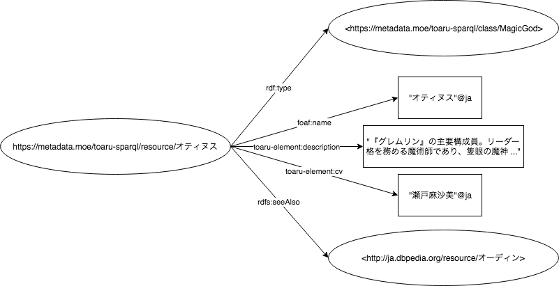

ABOUT
本サイトは、鎌池和馬による原作『とある魔術の禁書目録』及びそのメディアミックス作品に登場するキャラクターや作品の書誌情報をLinked Data化したものです。 データはRDF形式のグラフデータとなっており、SPARQLを用いて検索することができます。

RDFのイメージ図
スキーマ
Googleスプレッドシートにてクラス定義、プロパティ定義を公開しています。
Contact
要望、不具合等の連絡は、てんくろ( @etoile_014 )にお願いします。